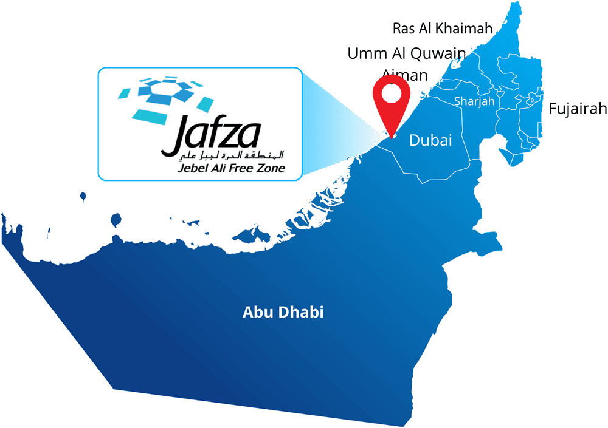

Handelsvolumen zwischen JAFZA und den USA (in Tonnen)

Die Jebel Ali Free Zone (JAFZA) ist eine der führenden Wirtschaftszonen in den Vereinigten Arabischen Emiraten (VAE) und gilt als eines der wichtigsten Handels- und Industriezentren in der Region. Gegründet im Jahr 1985, bietet die JAFZA eine erstklassige Infrastruktur und eine breite Palette von Geschäfts- und Logistikdienstleistungen für Unternehmen aus verschiedenen Branchen. Mit modernen Einrichtungen, strategischer Lage und steuerlichen Anreizen lockt die JAFZA Unternehmen aus der ganzen Welt an und spielt eine bedeutende Rolle bei der Förderung von Handel, Investitionen und wirtschaftlichem Wachstum in den VAE.
Die Jebel Ali Free Zone erstreckt sich über eine Fläche von über 57 Quadratkilometern und liegt geografisch gesehen im Emirat Dubai, Vereinigte Arabische Emirate. Ihre genauen geografischen Koordinaten sind etwa zwischen 24°59'55" N Breitengrad und 55°05'15" E Längengrad. Diese strategische Lage befindet sich in unmittelbarer Nähe zum Jebel Ali Seehafen, einem der größten künstlichen Häfen der Welt, und dem Dubai International Airport, einem der verkehrsreichsten Flughäfen der Region. Die JAFZA dient als wichtiger Knotenpunkt für den Handel und die Logistik zwischen Ost und West, was sie zu einem attraktiven Standort für Unternehmen aus der ganzen Welt macht. 
Die JAFZA wurde 1985 gegründet und ist seitdem zu einem wichtigen wirtschaftlichen Knotenpunkt in der Region geworden. Die Hauptziele der Jebel Ali Free Zone sind jeher die Förderung von Handel, Industrie und Logistik sowie die Unterstützung von Unternehmen bei der Expansion in den Nahen Osten und darüber hinaus.
| Vorteile | Nachteile | |
|---|---|---|
| Steuern | Unternehmen in der JAFZA sind von der Einkommenssteuer befreit | Es gibt eine jährliche Lizenzgebühr |
| Infrastruktur | Moderne Einrichtungen und Infrastruktur | Hohe Kosten für Miete und Wartung |
| Lage | Strategische Lage in der Nähe des Jebel Ali Hafens und des Dubai International Airport | Fernab von anderen Geschäftszentren |
| Logistik | Umfassende Logistikdienstleistungen und Transportnetzwerk | Abhängigkeit von den Infrastrukturen der JAFZA |
Die wirtschaftlichen Auswirkung lassen sich wie folgt darstellen:
Die JAFZA bietet eine breite Palette von Dienstleistungen für Unternehmen an, darunter:
In der Jebel Ali Free Zone sind Unternehmen aus einer Vielzahl von Branchen ansässig, darunter: